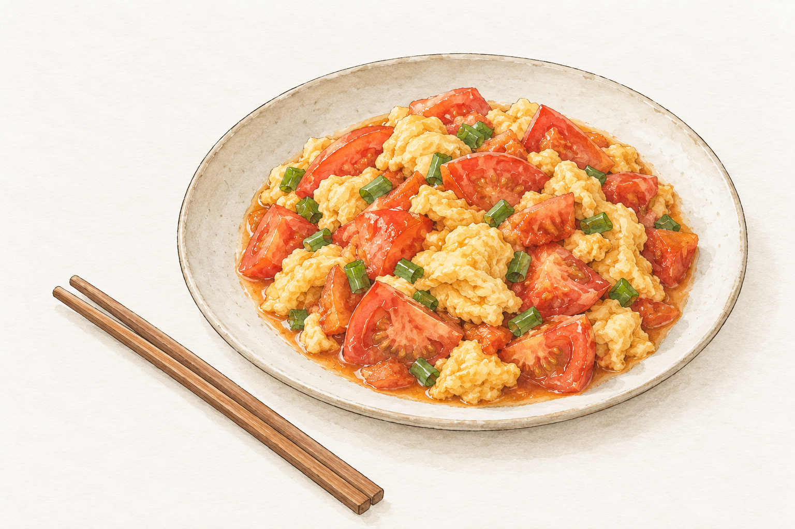

菜譜 / 非湯料理
番茄炒蛋
蛋先炒到半熟盛起，再把番茄炒出汁，最後合在一起。蛋保持柔軟，番茄帶點湯汁，適合配飯。

做法
-
番茄去蒂切成小塊；青蔥切段，蔥白和蔥綠分開放。
AI 繪製插畫 -
雞蛋打入碗中，加一小撮鹽打散。
-
熱鍋後倒入食用油，油熱倒入蛋液。蛋液邊緣凝固後輕推，約七分熟就盛起，別炒老。
AI 繪製插畫 -
原鍋放入蔥白炒香，下番茄翻炒到軟化出汁，加糖、鹽和水煮一分鐘。
AI 繪製插畫 -
倒回炒蛋拌勻，讓蛋吸一點湯汁，撒上蔥綠就起鍋。
AI 繪製插畫
番茄偏酸時可多加一點糖；想要湯汁多一些，水可加到 80 ml。